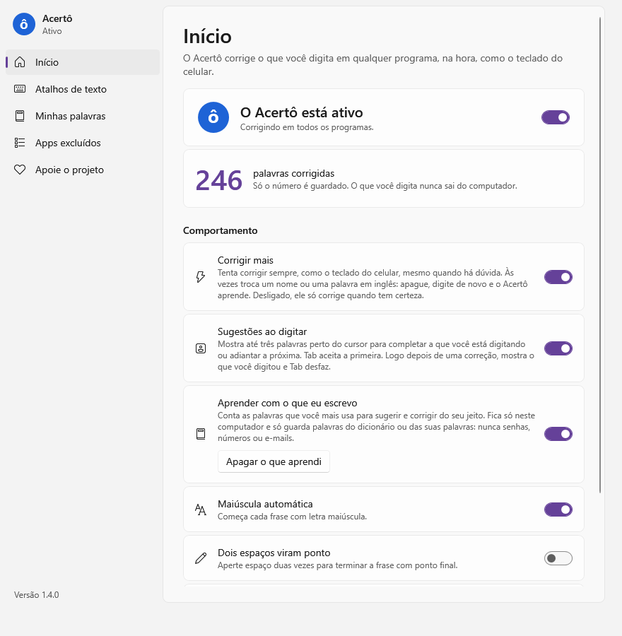
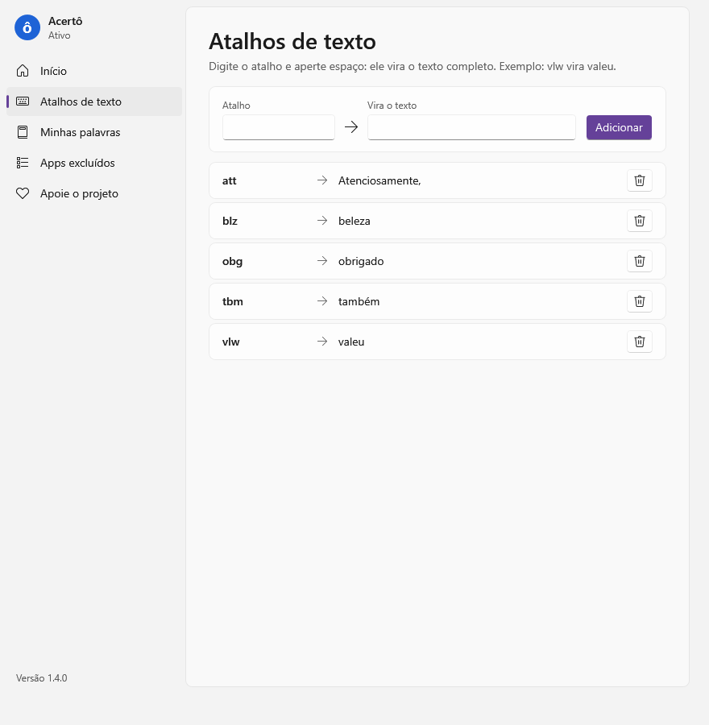
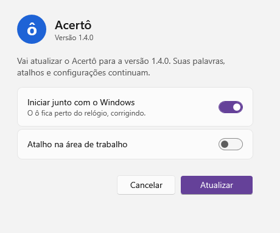

Acertô
O corretor automático do Windows, em português
Você digita rápido.
E erra.
naovocemutioconcertezahje
O Acertô corrige na hora, em qualquer programa.
Veja funcionando
Sem acento, com erros de digitação. Ele acerta quando a palavra termina.
REAL Gravação do Acertô em uso, sem edição
Corrige sozinho quando a palavra termina
Acento e cedilha
informacaoinformação
Erro de digitação
mutiomuito
Erro de escrita
concertezacom certeza
Usa o contexto
isso e muitoisso é muito
Maiúscula em nomes
fui para curitibafui para Curitiba
Atalhos de texto
vlwvaleu
Sugestões perto do cursor
Completa a palavra mesmo com erro. Tab aceita.
Muito obrgiobrigado
obrigadoTabobrigadaobrigação
Tab
Tudo em uma tela simples


Clique no ô perto do relógio para pausar ou abrir as configurações.
Ctrl+Shift+F12 pausa e retoma de qualquer lugar.
Do seu jeito

Crie atalhos de texto e ensine as suas palavras. Ele aprende como você escreve.

Instala em um clique, sem precisar de administrador.
Preciso e privado
93%de acerto em frases reais, usando o contexto
0,12%de palavras certas alteradas por engano
Offlineo que você digita nunca sai do computador
Acertô
github.com/RichardCarraro/Acerto